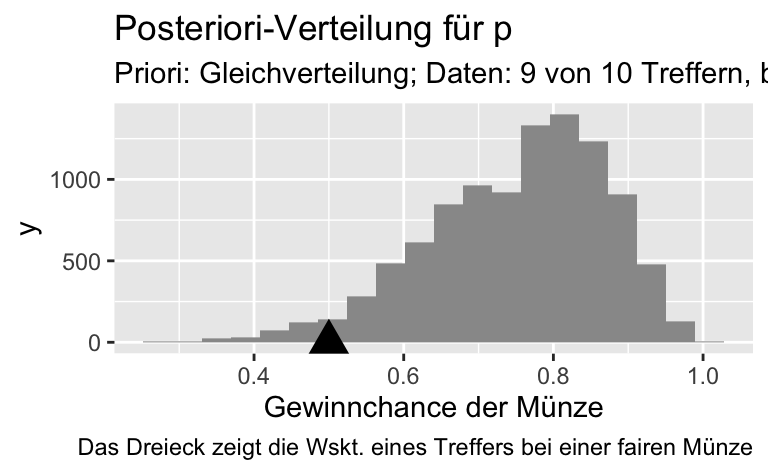
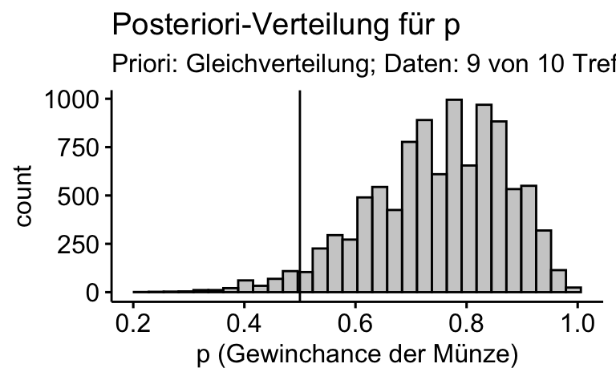

library(tidyverse)postvert-vis-zwielicht
2023
vis
bayes
post
string
Setup
Aufgabe
Der zwielichte Dozent: Stichproben-Vert. vs. Post-Vert.
In einer dunklen Gasse fordert Sie ein Statistik-Dozent zu einem Glücksspiel heraus1. Münzwurf; wenn er gewinnt, müssen Sie 10 Euro zahlen. Gewinnen Sie, bekommen Sie 11 Euro. Klingt nach einer guten Partie, nicht war? Natürlich nehmen Sie sofort an.
Sie spielen also Münzwurf; der Dozent setzt auf Zahl. Sie spielen 10 Runden. Leider gewinnt der Dozent 9 von 10 Mal2.
Ist die Münze fair oder zieht der mich über den Tisch?, das ist die Frage, die Ihnen brennend durch den Kopf zieht.
“Sind 9 von 10 Treffern noch realistisch erwartbar, wenn es mit rechten Dingen zugeht, oder beweist das Ergebnis, dass die Münze gezinkt ist?”
Wütend (und mit leeren Taschen) ziehen Sie von dannen.
Zusammengefasst: Daten: 9 von 10 Treffern beim Münzwurf. Forschungsfrage: Ist die Münze fair?
Schauen wir uns zunächst einmal an, wie wahrscheinlich 9 von 10 Treffern sind, wenn die Münze fair ist, s. Figure 1, links.
Die Stichprobenverteilung zeigt, wie wahrscheinlich die empirischen Daten \(D\) (z.B. 9 von 10 Treffer) sind, gegeben eines Parameterwerts \(\pi\) (z.B. \(p=0.5\)): \(Pr(D|\pi)\)3.
Anders gesagt, die Stichprobenverteilung zeigt die Verteilung der Likelihoods eines bestimmten Parameterwerts.
In der Bayes-Statistik ist die Post-Verteilung Dreh- und Angelpunkt der Entscheidung über eine Hypothese. In Figure 1 ist die Posteriori-Verteilung für die Daten zum zwielichten Dozent dargestellt.
# Post-Verteilung:
d_zwielicht <-
tibble(
p_grid = seq( from=0 , to=1 , length.out=100),
prior = 1, # Priori-Gewichte
likelihood = dbinom(8, size = 10, prob=p_grid) ,
unstandardisierte_posterior = likelihood * prior ,
posterior = unstandardisierte_posterior / sum(unstandardisierte_posterior))
# Stichproben ziehen aus der Posteriori-Verteilung:
samples_zwielicht <-
tibble(
gewinnchance_muenze = sample(
d_zwielicht$p_grid ,
prob=d_zwielicht$posterior,
size=1e4,
replace=TRUE)) %>%
mutate(
id = row_number())

gghistogram(samples_zwielicht,
x = "gewinnchance_muenze",
title = "Posteriori-Verteilung für p",
subtitle = "Priori: Gleichverteilung; Daten: 9 von 10 Treffern, binomialverteilt",
xlab = "p (Gewinchance der Münze)",
fill = "grey60") +
geom_vline(xintercept = 0.5)Aufgab:e Bauen Sie daraufhin die oben gezeigte Abbildung nach.
Hinweise:
- Orientieren Sie sich im Übrigen an den allgemeinen Hinweisen des Datenwerks.
Lösung
Pakete starten:
library(tidyverse)
library(ggpubr)Post-Verteilung erstellen:
d_zwielicht <-
tibble(
p_grid = seq( from=0 , to=1 , length.out=100),
prior = 1, # Priori-Gewichte
likelihood = dbinom(8, size = 10, prob=p_grid) ,
unstandardisierte_posterior = likelihood * prior ,
posterior = unstandardisierte_posterior / sum(unstandardisierte_posterior))Stichproben ziehen aus der Posteriori-Verteilung:
samples_zwielicht <-
tibble(
gewinnchance_muenze = sample(
d_zwielicht$p_grid ,
prob=d_zwielicht$posterior,
size=1e4,
replace=TRUE)) %>%
mutate(
id = row_number())Verteilung visualisieren, z.B. mit ggpubr:
gghistogram(samples_zwielicht,
x = "gewinnchance_muenze",
title = "Posteriori-Verteilung für p",
subtitle = "Priori: Gleichverteilung; Daten: 9 von 10 Treffern, binomialverteilt",
xlab = "p (Gewinchance der Münze)",
fill = "grey60") +
geom_vline(xintercept = 0.5)
Oder mit purem ggplot:
p_samples_zwielicht <-
samples_zwielicht %>%
ggplot() +
aes(x = gewinnchance_muenze) +
geom_histogram(fill = "grey60", bins = 20) +
#geom_vline(xintercept = 0.9) +
#geom_label(x = 0.8, y= 0, label = "Emp. Ergebnis") +
labs(title = "Posteriori-Verteilung für p",
subtitle = "Priori: Gleichverteilung; Daten: 9 von 10 Treffern, binomialverteilt",
caption = "Das Dreieck zeigt die Wahrscheinlichkeit eines Treffers bei einer fairen Münze",
x = "Gewinnchance der Münze") +
annotate("point", x = .5, y = 0, size = 5, color = "grey40", shape = 17)
p_samples_zwielicht
Es reicht i.d.R. vollkommen, wenn Sie eine der beiden Möglichkeiten beherrschen.
Tipp: Fragen Sie ChatGPT and Friends nach dem R-Code.
Categories:
- 2023
- vis
- bayes
- post
- string
Footnotes
Hier bräuchte es ein passendes Meme; Vorschläge bitte an mich.↩︎
was er mit lautem Gelächter quittiert↩︎
Das griechische kleine \(p\) wird “pi” genannt und \(\pi\) geschrieben. Zur Erinnerung: Parameter- oder Populationskennwerte werden in der Statistik häufig mit griechischen Buchstaben benannt, um sie von Stichprobenkennwerten abzugrenzen.↩︎